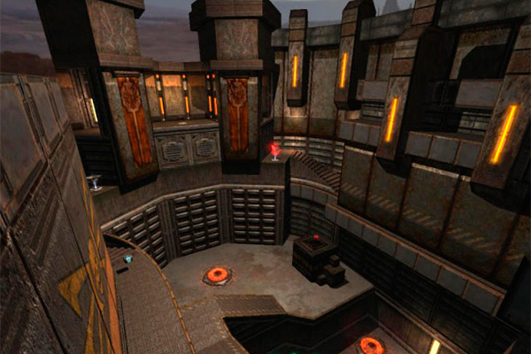
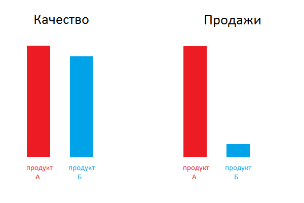

Just a blog so far
О наших принципах-ограничениях, таких как: "никогда ни с кем не партнеримся", "никаких бонусов", "никого не покупаем и никому не продаемся", "не булшитим", "не делаем скидок", "отказываемся от любой государственной поддержки", "не нанимаем людей без знаний науки (даже дизайнеров или маркетологов)", и многих других; вакансия программиста-devlead-а (ЗП 250т.р.), которому надо будет написать весь набор наших программ: библиотеку для эмулирования химических реакций, 3D визуализатор молекулярной динамики реакций, предположительно на Unity3D, виртуальную химическую лабораторию, web сайт с заданиями и социальной механикой, начинка планшета, который будет идти вместе с химическим набором; все это программист, конечно, будет писать не один, но именно он начнет работу и заложит фундамент всех этих программ.
Я уже писал о тех, кого я ищу, чтобы вместе заняться визуализацией научных знаний: о квантовом химике и 3D-дизайнере. Чтобы окончательно сформировать начальную команду, мне нужен еще один человек – программист (ЗП 250т.р.). Для меня вакансия программиста - самая ответственная. Несмотря на то, что первым результатом нашей работы будет химический набор типа "Юный химик", основная ценность этого набора будет именно в программном обеспечении, которое визуализирует ход реакций, показывает, что и как происходит "внутри". За свою жизнь я нанял более сотни программистов, а сколько провел собеседований, даже боюсь считать. Но находить по-настоящему хорошего программиста от этого не стало намного проще.

Пожалуй, самое удивительное и необычное в работе программистов - это колоссальная разница между хорошими программистами и гениальными. Многие слышали, что слабые и сильные программисты отличаются друг от друга, как день и ночь. Разница между ними - не на проценты и даже не в разы, а в десятки раз. Достаточно вспомнить, что Quake более чем на половину был создан одним человеком, Джоном Кармаком, а у Nginx, третьего по популярности веб-сервера в мире, всего один разработчик - Игорь Сысоев.
Человеку из другой индустрии трудно в это поверить, поскольку такая разница редко встречается, но это факт. В SPB Software мы нанимали только самых сильных программистов. Часто возникала ситуация, когда нам срочно были нужны специалисты, а мы по полгода не могли найти подходящего по уровню человека. Нередко бывало и так, что после 20-30 очных интервью (с кандидатами, которые уже прошли первичные фильтры) мы не наннимали ни одного человека. К чему я это все? К тому, что даже в такой сильной команде были отдельные гении, чья результативность в 3-5 раз выше, чем у других.
Если вы занимаетесь консалтингово-аутсорсным бизнесом, разработками на заказ, или внутренней разработкой, то у вас нет особой нужды в лучших программистах. Я не видел заказчиков, готовых платить за человека, работающего на проекте в 3 раза больше других, даже если он гениален. Факт гениальности вашего разработчика трудно "продать". Да и в корпоративной системе с 528 формочками гениальные программисты не так востребованы - им просто негде развернуться. Представьте себе ситуацию, что вы разрабатываете внутреннюю систему автоматизации предприятия. Допустим, вы можете ее сделать дешевле в 2 раза, но на 10% хуже. Оправдан ли такой выбор? В большинстве случаев - да. Для внутреннего проекта успех измеряется тем, за какой срок проект окупит себя.
Другое дело если вы производите продукт для конкурентного рынка. Допустим, есть два продукта - А и Б, причем продукт А на 10% лучше. На сколько у него будет больше продаж, пользователей, прибыли? Ответ - вовсе не "на 10%", а скорее "в 10 раз". Ибо зачем кому-то из пользователей выбирать продукт, который хуже? Пользователям нет дела до того, сколько вы потратили на разработку. Они просто хотят найти для себя лучшее решение.

Поэтому для продуктовой компании так важно нанимать гениальных программистов. Идеи это не новые, о них уже писал Joel и он же упоминал главную проблему поиска гениальных программистов: они уже все пристроены и в большинстве случаев не ищут работы.
Что же я могу сделать, чтобы найти лучшего? Да, у нас одна из самых амбициозных и интересных задач. Но как ни банально это звучит "money matters". Я верю, что предложив зарплату в два раза больше, чем у хорошего программиста в большинстве компаний, я дам повод многим людям подумать об этой задаче, а их знакомым - написать им Вконтакте "хей, мне кажется, это работа для тебя".
У этого есть и другая положительная сторона. Одни из лучших программистов, которых я видел, не программируют. Часто в компаниях для программистов нет карьерного пути, сравнимого с менеджерским. И многие программисты уходят в менеджеры. Хотя, если их посадить писать код, результат будет, как от целой группы. И часто они скучают по кодированию. Я хочу предложить такую зарплату, чтобы этим людям работа была интересной.
Тут все просто: мне нужен гениальный программист, знающий физику и химию. Программист, который быстро и хорошо пишет код, который может создать удобную архитектуру системы. Программист, который будет в курсе основных существующих технологий и сможет подобрать оптимальную технологию как для сайта, так и для 3D визуализации химических реакций. Программировать придется скорее всего на C++, Java и на чем-то типа Ruby или Python. Так что знание C++ и Java необходимо (да и не очень-то я верю в гениальных программистов, не знающих C++ и Java).
Условия:
Ситуация у нас уникальная: есть возможность сесть и начать писать с нуля большой комплекс:
Послать свое резюме на позицию программиста
В конце пару слов о наших принципах. Мы хотим создать компанию, которая работает по всему миру. Для этого нам надо быть прибыльной компанией с масштабируемой моделью. Мы создаем компанию на века. Компанию, которая позволит лучшим умам работать над вопросом улучшения передачи знаний о науке. Пропуская промежуточную цепочку выводов приведу сразу выводы, которые я из этого сделал. Они все в форме отрицания - так мне кажется нагляднее: